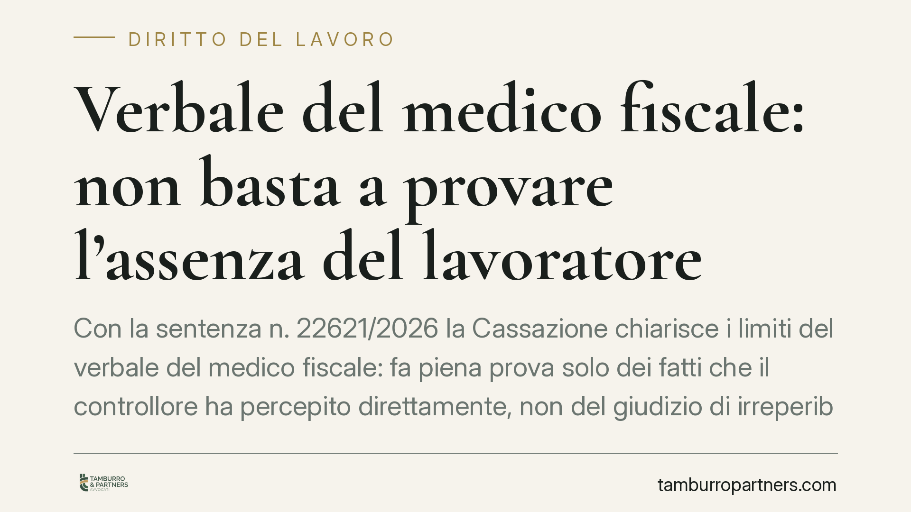

Verbale del medico fiscale: non basta a provare l'assenza del lavoratore
Con la sentenza n. 22621/2026 la Cassazione chiarisce i limiti del verbale del medico fiscale: fa piena prova solo dei fatti che il controllore ha percepito direttamente, non del giudizio di irreperibilità. L'onere di dimostrare l'assenza colpevole resta sul datore di lavoro. In mancanza, il licenziamento è illegittimo e il lavoratore va reintegrato.

Il caso
Un lavoratore in malattia viene licenziato per non essere stato reperibile alla visita di controllo. A fondamento del provvedimento, il datore pone esclusivamente il verbale redatto dal medico fiscale, che attestava l'assenza al momento del controllo. Il lavoratore impugna il licenziamento. La Corte di Cassazione, Sezione Lavoro, con la sentenza n. 22621/2026, gli dà ragione e dispone la reintegra.
La questione centrale è una sola: quanto "pesa" il verbale del medico fiscale come prova? La risposta della Corte ridimensiona un automatismo che molti datori davano per scontato.
Inquadramento normativo
Il verbale del medico fiscale è un atto pubblico e, come tale, è disciplinato dagli artt. 2699 e 2700 del Codice civile. L'art. 2699 definisce l'atto pubblico come il documento redatto da un pubblico ufficiale autorizzato. L'art. 2700 stabilisce che l'atto pubblico fa "piena prova" — cioè è contestabile solo con querela di falso — ma solo di alcuni elementi: la provenienza dell'atto dal pubblico ufficiale, le dichiarazioni delle parti e, soprattutto, "gli altri fatti che il pubblico ufficiale attesta avvenuti in sua presenza o da lui compiuti".
Il punto è proprio questo. La fede privilegiata copre ciò che il medico ha percepito direttamente con i propri sensi: ad esempio, che ha suonato al campanello all'indirizzo indicato, che nessuno ha risposto, l'orario del controllo. Non copre, invece, la valutazione — di natura logico-deduttiva — che da quei fatti il lavoratore fosse ingiustificatamente irreperibile. L'irreperibilità colpevole non è un fatto percepito: è una conclusione, e come tale resta liberamente valutabile dal giudice e contestabile con ogni mezzo di prova.
Implicazioni pratiche
Per il datore di lavoro la conseguenza è concreta: il verbale del medico fiscale, da solo, non è sufficiente a dimostrare che l'assenza fosse ingiustificata. Attesta che a una certa ora nessuno era presente, ma non prova che il lavoratore si fosse sottratto volontariamente al controllo.
L'onere della prova dell'assenza colpevole grava interamente sul datore. Deve essere lui a dimostrare che non ricorreva alcuna giustificazione legittima — tra quelle che la giurisprudenza riconosce: necessità di cure urgenti, visite mediche non rinviabili, forza maggiore, impossibilità concreta di sentire il campanello.
Per il lavoratore significa che può contestare l'addebito anche senza querela di falso, fornendo elementi che spieghino la mancata risposta al controllo. Se il datore non assolve il proprio onere, il licenziamento è illegittimo e scatta la tutela reintegratoria.
Va ricordato che il controllo dell'INPS resta uno strumento legittimo. La sentenza non ne mette in discussione la validità: ne delimita soltanto l'efficacia probatoria. Un conto è ciò che il verbale accerta, un altro è la responsabilità disciplinare che da quell'accertamento il datore vorrebbe far discendere.
Cosa fare in concreto
Per il datore di lavoro:
- Non fondare il licenziamento sul solo verbale di assenza. Raccogliete elementi ulteriori che dimostrino la colpevolezza dell'assenza prima di procedere.
- Verificate che la contestazione disciplinare sia specifica e consenta al lavoratore di difendersi sul punto dell'ingiustificata irreperibilità.
- Valutate la proporzionalità della sanzione rispetto alla condotta effettivamente provata, non a quella presunta.
Per il lavoratore:
- Conservate ogni documento utile a giustificare l'assenza al controllo (referti, appuntamenti medici, prove di eventi imprevisti).
- Contestate l'addebito nei termini di legge, indicando le ragioni concrete della mancata reperibilità.
- Non date per scontato che il verbale sia incontestabile: la sua efficacia privilegiata copre solo i fatti percepiti dal medico, non il giudizio di colpevolezza.
Consigliamo, in entrambi i casi, di sottoporre la vicenda a una valutazione tecnica prima di assumere iniziative, perché la linea di confine tra fatto accertato e valutazione del fatto incide direttamente sull'esito del contenzioso.
---
*Contributo informativo a cura di Tamburro & Partners - Avv. Giuseppe Tamburro. Non costituisce parere legale.*
Ogni storia di lavoro ha i suoi tempi.
Se gestisci HR e vuoi un confronto su contenzioso, ispezioni o licenziamenti, scrivi allo studio. Ti rispondiamo entro un giorno lavorativo.